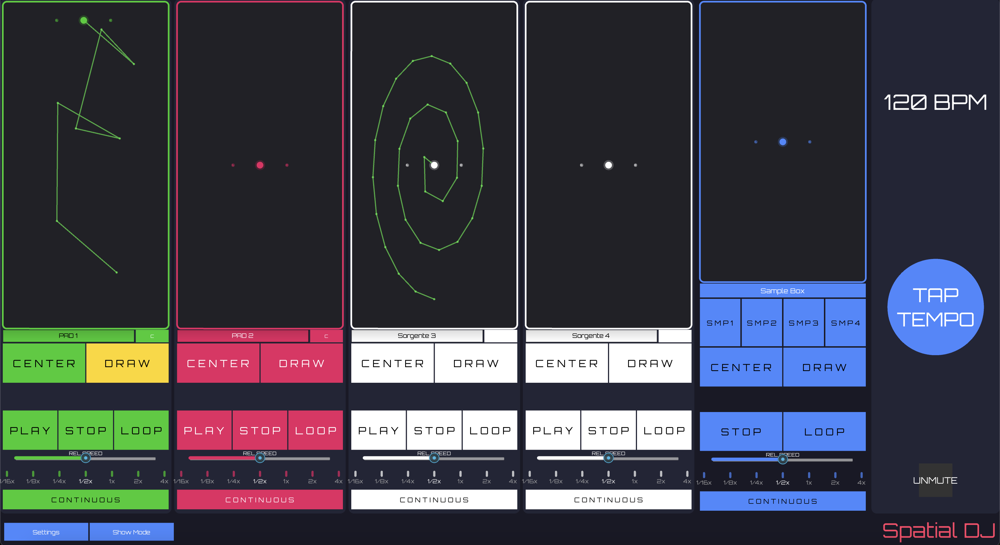
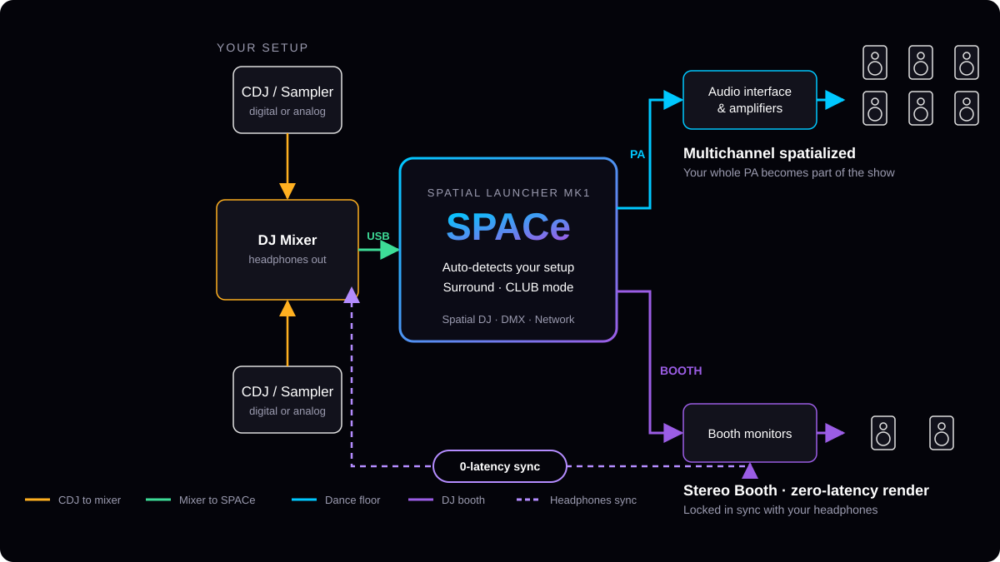
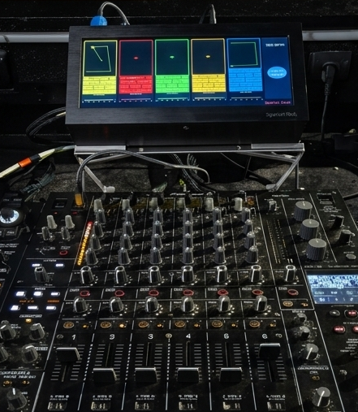

Trajectories
The video shows the user interacting with the display to select one of the three trajectory presets. Modify the relative speed of the movement with relative fader.
Spatial Corps · Audio Solutions
Audio solutions empowering people
Spatial Corps was born from a deep shared passion and a collective obsession: music, DJ culture, sound systems, and the art of shaping unforgettable audio experiences. A collective of friends, experts and enthusiasts united by club culture and the pursuit of immersive sound.
Book a DemoWe are a technology-driven company built by a collective of friends, experts and enthusiasts who grew up immersed in club culture, sound engineering, and live performance. United by shared values and decades of collective experience, each of us brings deep expertise in a different dimension of club audio and performance design.
For more than a decade, our leadership team has been responsible for the complete audio experience of one of the most renowned and historic clubs in Ibiza. Night after night, year after year, we’ve shaped sound systems and managed immersive environments at the highest level.
This experience spans multiple dimensions: from on-the-ground club management and DJ performance perspective, to sound engineering rigor on large-scale live events, to the design and construction of sound systems themselves—combining technical precision with artistic vision.
Within the collective, some of us turn this hands-on knowledge into scalable product vision and structured company operations. Together, we have shaped every element of Spatial Club, Spatial DJ and SPACe, with each member contributing specific expertise in DJ performance and system design.
Spatial Corps is built on a simple belief: extraordinary audio does not start with buying more hardware—it starts with mastering what you already have.
Our shared vision is to leverage real-world experience from the most demanding performance environments and turn it into solutions that empower people. Software that helps audio professionals, enthusiasts, and creatives fully understand, control, and push their audio systems to their true potential. This is where Spatial Corps operates.
At the core of everything we do is the listener. Whether on a packed dancefloor, inside a club, or within an immersive environment, our mission is to enable deep, immersive, and emotionally powerful audio experiences—experiences that move people, elevate music, and transform space into something unforgettable.
Spatial Corps exists to give creators and operators the tools to shape sound with intention, precision, and freedom—and to ensure that, in the end, the audience always feels it.
At Spatial Corps, we have created effective technologies that are simple and fast to use. Our goal is to bring the immersive sound revolution to everyone, every day.
Three names, one vision: Spatial DJ (patent pending) is the interface, SPACe is the engine, and Spatial Club is the suite that unites them—running on our dedicated device, Spatial Launcher MK1.
Designed for the performance: easy, intuitive, and built to make an immersive DJ set effortless to play.

Our powerful spatialization engine, developed to deliver in real clubs, night after night.

Spatial Club brings our two innovations together: Spatial DJ and SPACe in one complete immersive solution. To guarantee top performance, Spatial Club runs on Spatial Launcher MK1, our unique, purpose-built device with digital audio, analog audio, network and DMX connectivity.

These principles ensure our technologies are not only powerful—but usable in real-world conditions.
Spatial DJ and Spatial Club together form a unified ecosystem designed to transform traditional club sound systems into immersive, living audio environments. By combining state-of-the-art hardware, advanced software, and proprietary spatial audio algorithms, the Spatial ecosystem allows sound to move, interact with space, and evolve in real time—without forcing clubs or artists to rebuild everything from scratch.
Spatial DJ is the creative performance interface for DJs, and it plays well with others: it controls external spatialization engines via OSC, already compatible with numerous immersive audio systems. Need something new? Any software you want can be added easily. Your rig, your engine, your rules.
Spatial Club is the full experience: Spatial DJ + SPACe, running on Spatial Launcher MK1. A complete, self-contained immersive audio system—without depending on third-party spatialization engines.
Spatial DJ unlocks a new, powerful and creative performance system for DJs; Spatial Club helps club owners turn their existing rooms into advanced immersive spaces powered by SPACe.
Works with the vast majority of professional audio equipment:
At the core of the ecosystem lies Spatial DJ’s defining capability: real-time synchronization between spatial motion, rhythm, and BPM. This is the cornerstone of the Spatial Corps philosophy—and a patent-pending innovation. Spatial DJ enables DJs to:
By locking spatial behavior to tempo and rhythm, Spatial DJ transforms spatial audio from a background enhancement into a musical language—fully integrated into the DJ’s performance and identity. This makes immersion feel intentional, musical, and alive, rather than random or decorative.
What makes the Spatial ecosystem truly distinctive is not just immersion—it is control. Spatial DJ gives performers precise, rhythm-driven control over spatial movement, whether driving external engines via OSC or the proprietary SPACe engine within the Spatial Club suite. Together, interface and engine turn a static sound system into a dynamic performance instrument, where sound becomes a moving, expressive element of the show.
Music no longer simply plays in the room. It moves through it, reacts to it, and reshapes the audience experience moment by moment.
This is not experimental technology. It is engineered from real operational experience and held to professional standards.
Our approach is pragmatic, flexible, and rooted in club reality—where experience, flow, and reliability matter more than technical spectacle.
At Spatial Corps, our services are not standalone offerings. They form an integrated ecosystem designed to support venues and artists before, during, and long after the technology is installed. We don’t simply deliver technology. We partner with our clients to unlock its full potential.
Every venue is different. Every sound system has its own strengths, limitations, and personality. Our service ecosystem starts with understanding—not assumptions. We work closely with club owners, operators, and technical teams to:
From the very first conversation, our focus is clear: maximize results while respecting what already works.
The goal is not to make systems more complex—it is to make them more expressive, immersive, and controllable.
The objective is simple but powerful: enable DJs to express themselves more fully, without adding complexity or disrupting their creative flow.
This ensures that immersive audio remains an asset, not a one-time experiment.
Each element strengthens the others, creating a self-reinforcing ecosystem centered on experience.
For audiences: sound that moves, surrounds, and stays with them.
Step-by-step video tutorials to help you get the most out of the Spatial ecosystem—from first setup to advanced live performance techniques.